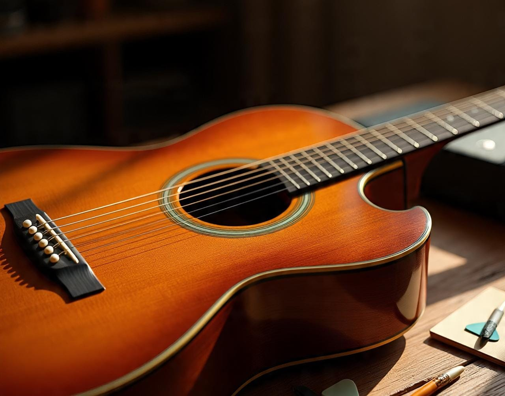

My first time with acustic guitar was unforgattable
Exploring a musical instrument
My first contact with the guitar was extremely difficult because I didn’t have much skill and struggled
to handle it properly. I didn’t know the notes, either. But over time, I learned that practice truly helps
us improve. If you want to learn to play an instrument, there’s nothing better than practicing regularly.
Visiting the church temple
Two months ago, I had a wonderful opportunity to travel to the temple of The Church of Jesus Christ of Latter-day Saints.
The experience was amazing. As a member of the Church, I had the chance to reflect on my covenants and help others as
well. The LDS temple is a peaceful place with stunning architecture—truly a sacred and inspiring environment.
English connect course
This week i'm anxious in participate of the english connect class, Here where I live always happen at friday